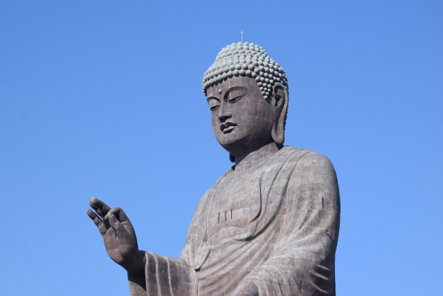
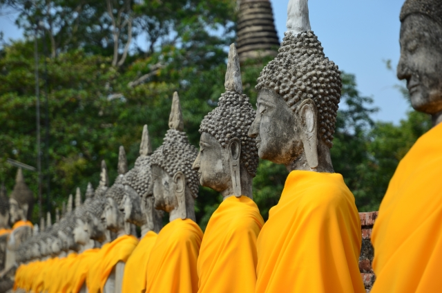
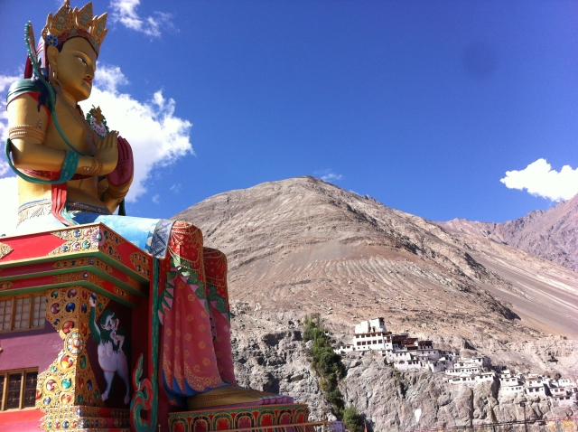

仏教
図鑑
大乗仏教
主に日本を含む東アジアで広く信奉されているのが大乗仏教です。
出家、在家問わず修行を積むことで仏になれると信じられています。
「空」の概念は大乗仏教で生まれた思想であり、この世の全てを救済することがこの流派の最終目的です。


上座仏教
上座部仏教は東南アジアで信奉されている仏教です。
出家信者しか仏になることができず、自分自身が修行をして解脱することを目的としております。
解脱した人間を通常は仏陀と呼びますが、上座仏教では阿羅漢になることが最終目的です。

密教
日本では空海、最澄が開いた天台宗、真言宗。海外ではモンゴル、チベットで信奉されている宗派です。
秘密の仏教と称されるこの宗派は、生きながらにして仏となる即身成仏を目的としています。
印やサンスクリット語のお経を唱えるのが有名です。